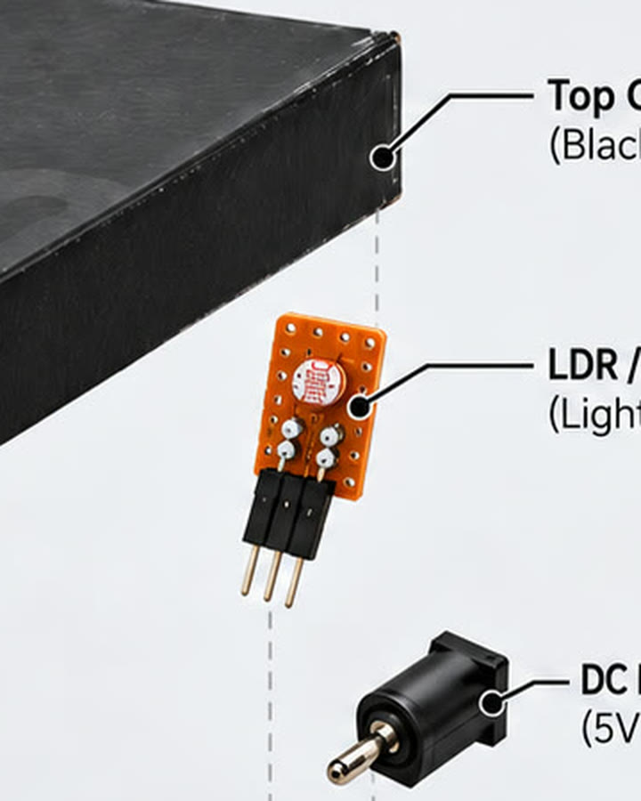
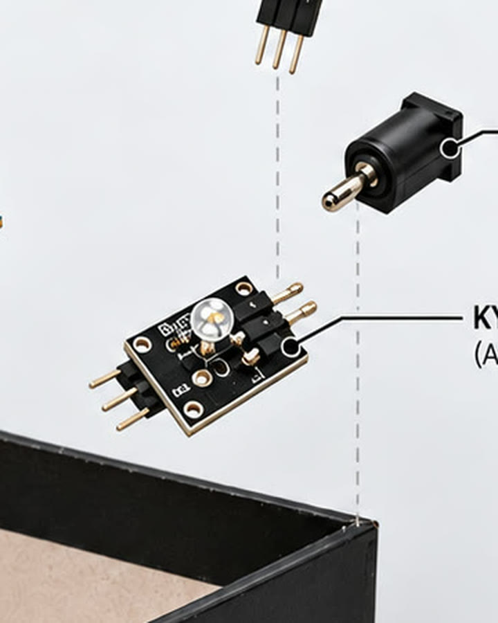
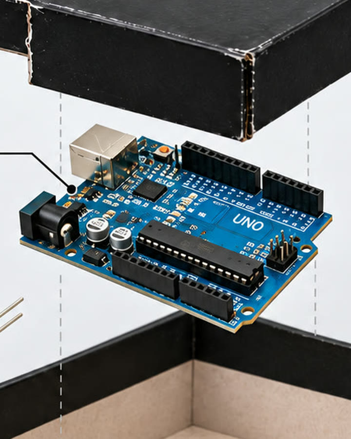
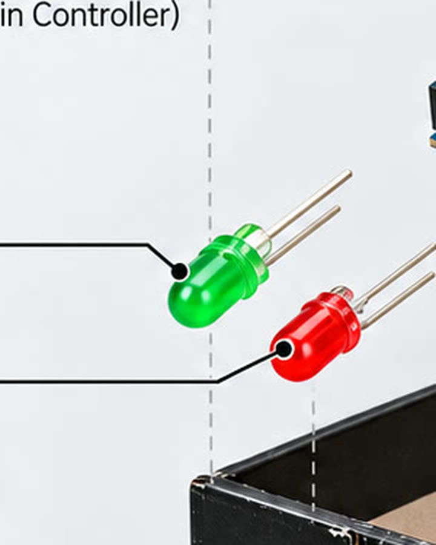
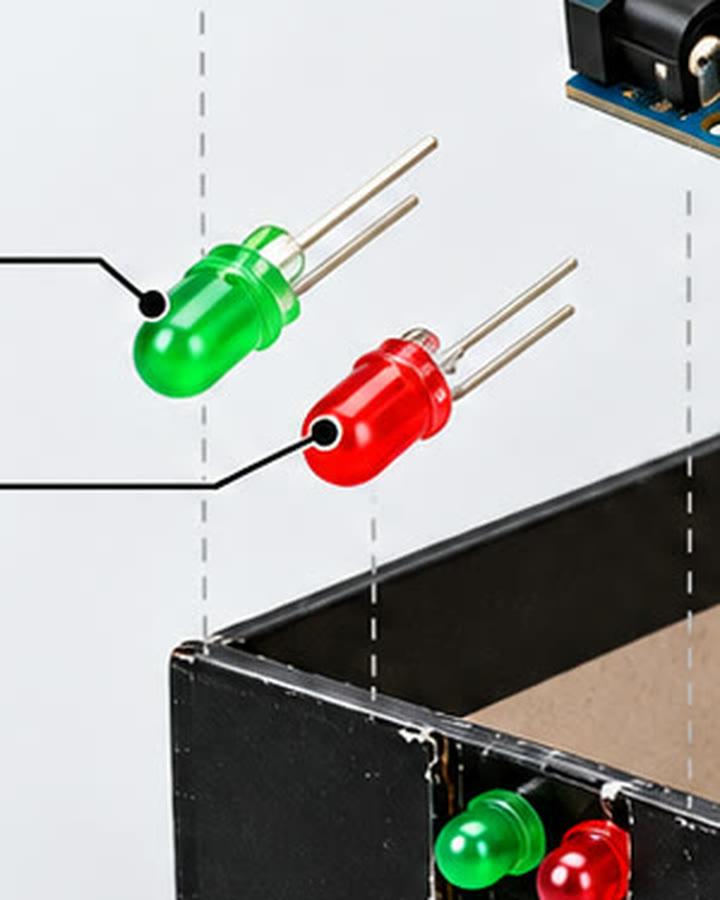

El dispositivo
Dos lecturas. Una señal clara.
El prototipo reúne sensores, un Arduino Uno y dos luces indicadoras.
El sensor LDR registra cambios de iluminación; el KY-020 detecta
inclinaciones o movimientos de la cava. El controlador procesa esas
lecturas y comunica el estado con un LED verde o rojo.

LDRMonitorea la luz que llega al espacio de guarda.
KY-020Advierte cambios de posición o inclinación.
Arduino UnoProcesa las señales de ambos sensores.
LED verdeIndica el estado habitual del dispositivo.
LED rojoSeñala un cambio detectado por los sensores.
ScannerGuard detecta e indica cambios; no bloquea la luz ni evita
físicamente el movimiento de las botellas.